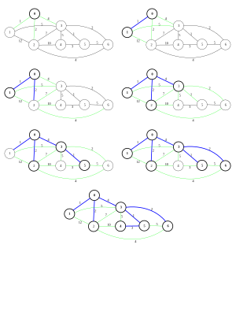
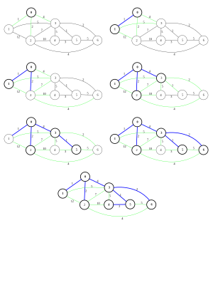

_
1. 소개
프림의 알고리즘은 가중치가 작은 간선부터 트리에 추가해 가며 최소 스패닝 트리를 구한다는 면에서는 크루스칼의 알고리즘과 같습니다. 크루스칼의 알고리즘은 간선들이 서로 연결되어 있지 않더라도 가중치가 작으면 트리에 추가하는 반면, 프림의 알고리즘에서는 현재 최소 스패팅 트리에 연결된 간선만 트리에 추가한다는 것이 프림 알고리즘과 크루스칼의 알고리즘의 차이점입니다.
2. 과정
다음 그래프에 프림 알고리즘을 적용하여 MST를 구해보자.
 

파란색 간선은 최소 스패닝 트리에 추가된 간선을 뜻하며, 녹색은 최소 스패팅 트리와 연결되어 있는 간선, 즉 최소 스패닝 트리에 추가될 가능성이 있는 간선을 의미합니다.
프림의 알고리즘은 먼저 특수한 한 정점을 최소 스패닝 트리에 추가시킵니다. 그 후, 현재의 트리와 연결된 간선들 중에서 가중치가 최소인 간선과 그에 연결된 정점을 계속해서 트리에 포함시킵니다. 이 과정을 모든 정점이 트리에 포함될 때까지, 총 \(|V|\)번 계속합니다.
3. 코드
3.1. \(O(|V|^2)\) | 배열을 이용한 방법
#include<bits/stdc++.h>
#define V 100000 //maximum number of nodes
using namespace std;
typedef pair<int, int> pp;
vector<pp> gr[V]; //first=weight, second=node number
int mincost[V];
bool check[V];
int prim(int v){
int i, j;
int ret=0;
int mn;
mincost[0]=0;
for(i=1;i<v;i++) mincost[i]=INT_MAX;
for(i=0;i<v;i++){
mn=-1;
for(j=0;j<v;j++)
if(!check[j]&&(mn==-1||mincost[j]<mincost[mn])) mn=j;
ret+=mincost[mn];
check[mn]=1;
for(j=0;j<gr[mn].size();j++)
mincost[gr[mn][j].second]=min(mincost[gr[mn][j].second], gr[mn][j].first);
}
return ret;
}
배열을 이용한 방법은 \(|V|\)개의 원소의 최솟값을 구하는 과정을 \(|V|\)번 반복하고, \(|E|\)개의 간선을 한 번씩 조사하므로 총 시간 복잡도는 \(O(|E|+|V|^2)\)입니다. 이때 \(|E|<|V|^2\)이므로 결국 시간 복잡도는 \(O(|V|^2)\)이 됩니다.
3.2. \(O(|E|\log |V|)\) | 우선순위 큐를 이용한 방법
#include<bits/stdc++.h>
#define V 100000 //number of nodes
using namespace std;
typedef pair<int, int> pp;
vector<pp> gr[V]; //first=weight, second=node number
bool check[V];
priority_queue<pp, vector<pp>, greater<pp> > mincost;
int prim(int v){
int i, j;
pp t;
int ret=0;
mincost.push(pp(0, 0));
for(i=0;i<v;i++){
while(check[mincost.top().second]) mincost.pop(); //delete already visited nodes
t=mincost.top(), mincost.pop();
check[t.second]=1;
ret+=t.first;
for(j=0;j<gr[t.second].size();j++){
mincost.push(pp(gr[t.second][j].first, gr[t.second][j].second));
}
}
return ret;
}
우선순위 큐를 이용한 방법은 \(|E|\)개의 원소를 가지는 우선순위 큐에 대한 삽입/삭제 연산을 최대 \(|E|\)번 하므로 시간 복잡도는 \(O(|E|\log |E|)\)이고, 위에서와 마찬가지로 \(|E|<|V|^2\)이므로 이는 \(O(|E|\log |V|)\)와 같습니다.
밀집된 그래프에서, 즉 \(|E|\)가 \(|V|^2\)에 가까울 경우에는 위의 방식이 아래의 방식보다 더 빠르게 동작합니다. 반면 \(|E|\)가 적당히 작은 경우에는 아래의 방식이 위의 것보다 더 빠르게 동작할 수 있습니다. 따라서 문제의 조건을 정확히 파악하고 그에 알맞은 구현 방법을 사용하는 것이 중요합니다.
4. 여담
자세히 살펴보면, 우선순위 큐를 이용한 프림의 알고리즘 구현은 다익스트라의 알고리즘과 상당히 비슷하다는 것을 알 수 있습니다. 이는 두 알고리즘의 아이디어가 상당히 비슷하기 때문인데, 실제로 두 알고리즘의 코드를 한두 줄만 고치면 다른 알고리즘의 코드로 변하는 것을 볼 수 있습니다.